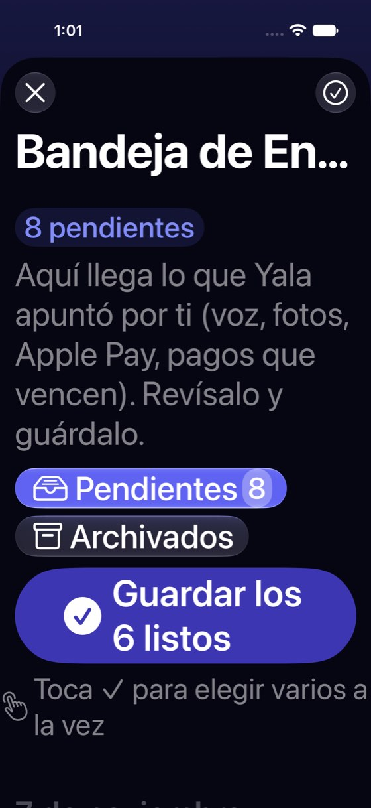
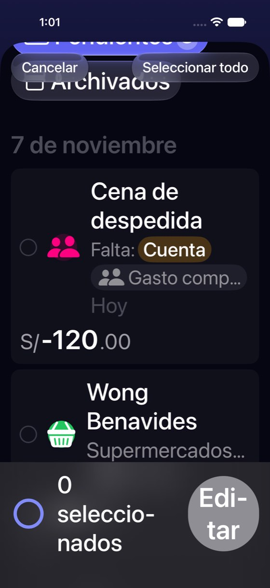
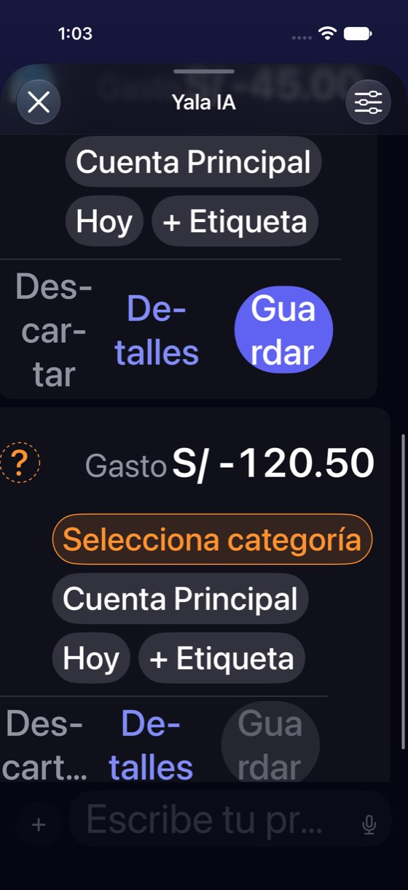
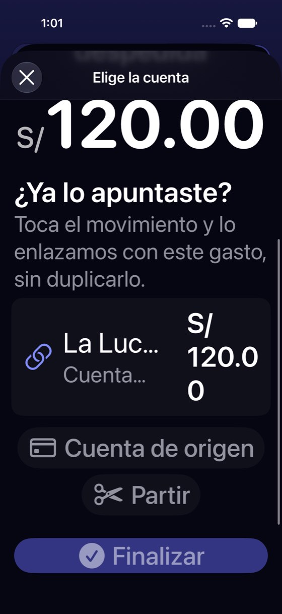
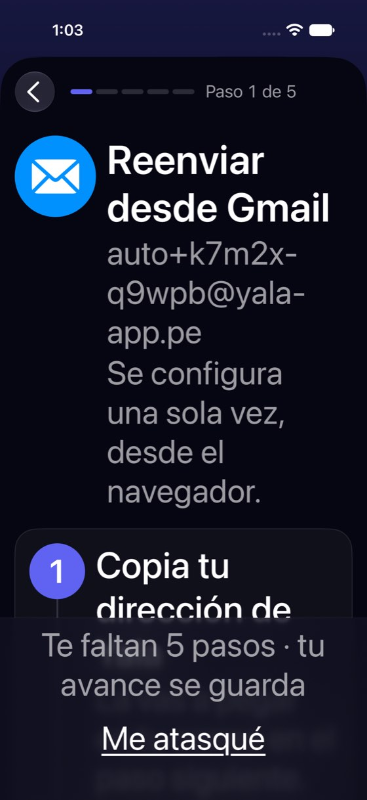

Con texto grande se parten los botones que hay que leer para decidir
Hoy
Capturas del simulador (app de origin/2.3, semillas de prueba). Pasos hoy: —





De dónde sale
- Captura Capturas ax3-01, ax3-05: «Bandeja de En…», «Cancelar» sobre «Archivados», «0 seleccio-nados · Edi-tar».
- Captura Capturas ax3-13 y ax3-14: el candidato «La Luc… S/ 120.0 0» y «Finalizar» sobre el texto.
- Captura Capturas ax3-47 y ax3-48: «Des-car-tar · De-talles · Gua rdar».
- Captura Capturas ax3-63 y ax3-72: el pie «Te faltan 5 pasos… Me atasqué» tapa la cuarta parte de la guía.
- Captura Captura ipad-01: en el iPad la Bandeja es una hoja centrada de ~400 pt sobre el Panel.
- Código
InboxView.swift:546-597(barra de selección enHStack),GroupDraftLinkCandidatesView.swift:52-74(fila enHStack).
Las opciones
De 3 a 5 alternativas con el mismo caso. Desliza cada recorrido; el anillo cian marca dónde toca Lucía.
Los botones de abajo se apilan en vez de partir palabras
Con texto de accesibilidad, las barras con dos o tres botones en fila (la de selección, la propuesta del chat, el candidato del gasto de grupo) pasan a una columna, con el botón principal arriba y a todo lo ancho. Es el mismo molde que ya usa la fila del borrador (el importe baja bajo el nombre).
A favor
- Quita los cortes que impiden leer el botón («Edi-tar», «Gua rdar», «S/ 120.0 0»).
- Usa el molde que ya existe (
AdaptiveRowStack), sin cambiar nada a tamaño normal.
En contra
- La barra de selección y la propuesta del chat crecen en alto.
- Hay que repasar cada barra: no es un cambio en un solo sitio.
El pie fijo de las guías se encoge con texto grande
En las guías por pasos (correo del banco, Apple Pay), el pie «Te faltan 5 pasos · tu avance se guarda / Me atasqué» ocupa un cuarto de la pantalla a AX3 y tapa los pasos. Con texto de accesibilidad, el recuento ya está arriba («Paso 1 de 5») y «Me atasqué» pasa al final del contenido.
A favor
- Devuelve un cuarto de pantalla a lo que hay que leer.
- Un cambio en un componente (
YalaStepGuide) arregla las dos guías y la de Face ID.
En contra
- «Me atasqué» queda al final: hay que desplazarse para encontrarlo.
«Bandeja» a secas, y el título no tapa los filtros
«Bandeja de Entrada» se corta («Bandeja de En…»). En español de la app basta «Bandeja» (así la nombran la pantalla del correo y el aviso de borradores nuevos). Y en modo selección, «Cancelar» y «Seleccionar todo» dejan de flotar sobre los filtros cuando la cabecera se desplaza con el contenido.
Bandeja
A favor
- Barato.
- Unifica el nombre: hoy conviven «Bandeja de Entrada», «Bandeja», «bandeja» y «bandeja de entrada».
En contra
- Cambia un nombre de pantalla (traducciones en 16 idiomas).
Lado a lado
La última pantalla de cada recorrido, frente a hoy.
Bandeja
Comparación
| Opción | Pasos para el caso (maqueta) | Esfuerzo | Riesgo | Reabre |
|---|---|---|---|---|
| Hoy | — | — | — | — |
| G1 · Los botones de abajo se apilan en vez de partir palabras | Igual que hoy | bajo | bajo | — |
| G2 · El pie fijo de las guías se encoge con texto grande | Igual que hoy | bajo | bajo | — |
| G3 · «Bandeja» a secas, y el título no tapa los filtros | Igual que hoy | bajo | bajo | — |
Lente de perfiles
Perfiles simulados, no entrevistas Los siete perfiles de la revisión del usuario nuevo, usados como lentes. riesgo alto de trabarse · medio · bajo.
| Perfil | Hoy | G1 | G2 | G3 |
|---|---|---|---|---|
| P1 · Migrante de Excel | — | — | — | — |
| P2 · Principiante abrumado | — | — | — | un nombre |
| P3 · Anotador rápido que no lee | — | — | — | — |
| P4 · Experto de otra app | — | — | — | — |
| P5 · Llega por una invitación de grupo | — | — | — | — |
| P6 · Varias monedas y tarjeta | — | — | — | — |
| P7 · Texto grande, a veces en iPad | botones que no se leen | se lee todo | más sitio | título entero |
Recomendación: G1
Apilar las barras de botones a tamaños de accesibilidad, con el molde que ya existe. Es lo que impide leer qué hace cada botón; G2 y G3 son baratos y pueden ir juntos en el mismo lote.
Qué decide Jürgen
- ¿Lote de texto grande con G1 + G2 + G3 juntos?
- ¿Se renombra «Bandeja de Entrada» a «Bandeja» en toda la app (G3)?
- En el iPad, ¿la Bandeja sigue en una hoja centrada o pasa a hoja grande o columna? (no se maquetó: pide decidir el patrón de iPad para hojas de lista).
Revisión por vistas 2.3 · Bandeja, Yala IA, correo del banco, Apple Pay y Siri. Maquetas en HTML con datos ficticios: no son la app. Pasos contados sobre las maquetas; los de «Hoy», en el simulador o en el código citado.